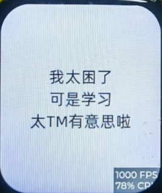

<!DOCTYPE lake>
<p data-lake-id="uc0cf0a92" id="uc0cf0a92" style="text-align: left"><span data-lake-id="u3d6039d1" id="u3d6039d1">FreeType 是一个开源的字体引擎，主要用于渲染位图和矢量字体。它支持多种字体格式，包括 TrueType、OpenType、Type 1 和 CID-keyed 字体。FreeType 提供了一个高效的 API，允许开发者在各种平台上访问和使用字体。</span></p><p data-lake-id="u9c06fbb4" id="u9c06fbb4" style="text-align: center"></p><span class="yuque-card-unsupported">[codeblock]</span><p data-lake-id="u7d19f2ce" id="u7d19f2ce"><span data-lake-id="u37070b35" id="u37070b35">这下好了， 想显示什么中文，直接导入字体文件就可以了。</span></p><p data-lake-id="u3d6bf172" id="u3d6bf172"><span data-lake-id="u69b32008" id="u69b32008">​</span><br/></p><p data-lake-id="u7158b151" id="u7158b151"><strong><span data-lake-id="u75bf5acf" id="u75bf5acf">注意事项：如果文件中要显示中文，文件的编码格式得使用utf-8</span></strong></p>